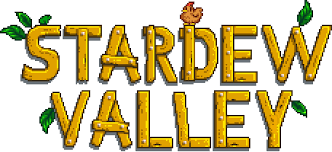

Você herdou a antiga fazenda do seu avô, em Stardew Valley
Com ferramentas de segunda-mão e algumas moedas, você parte para dar início a sua nova vida
Será que você vai aprender a viver da terra, a transformar esse matagal em um próspero lar?

Um jogador |
Cooperativo online |
Conquistas steam |
Nuvem steam |
|---|